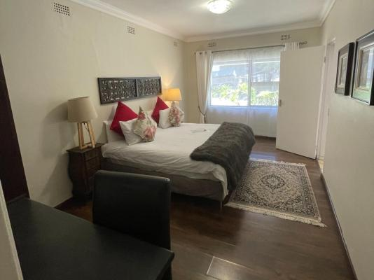
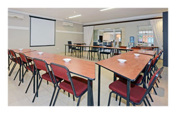

Services provided?
Oaklands Inn in Randburg offers a wide range of services including comfortable accommodation, conference facilities, free Wi-Fi, secure parking, daily breakfast, and wellness treatments such as massages and facials.
It is also fully load-shedding proof with solar backup, making it reliable for both leisure and business stays.
Accomodation
Standard Double Rooms: Air-conditioning, DStv, Wi-Fi, safe, sitting area, bar fridge, microwave, and bathroom with bath & shower.
Double Rooms with Patio: Private patios with garden views, outdoor furniture, and similar amenities to standard rooms.
One-Bedroom Apartments: King-size beds, fully equipped kitchenettes (stove, microwave, air fryer, refrigerator, toaster), dining & sitting areas, private balcony/patio.
Two-Bedroom Apartment: Includes a king bed and single bed, full kitchen, dining area, and bathroom with bath & shower

Dinning and Catering
Buffet Breakfast: Full English breakfast, eggs (omelette, poached, scrambled, boiled, fried), fruit, yoghurt, juice, coffee, and tea.
Communal Dining Area: Available for self-catering guests. Breakfast can be added for R150 per person per day.
Special Catering Options: Available for large groups, team-building events, or conferences.

Facilities and Services
Free Wi-Fi: Available throughout the property
DSTV in all rooms: Entertainment and news access.
Secure Parking: 75 parking spaces for guests.
Conference Facilities: 4 well-equipped conference rooms and one boardroom, seating up to 80 people, with projectors, plug points, and Wi-Fi.
Laundry & Braai Facilities: Available for guests.